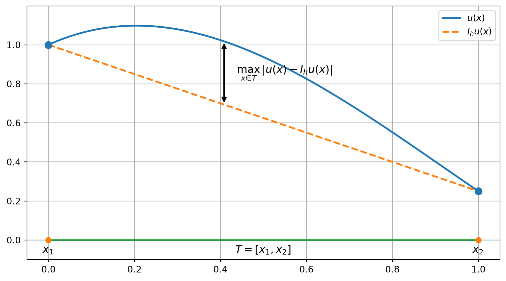
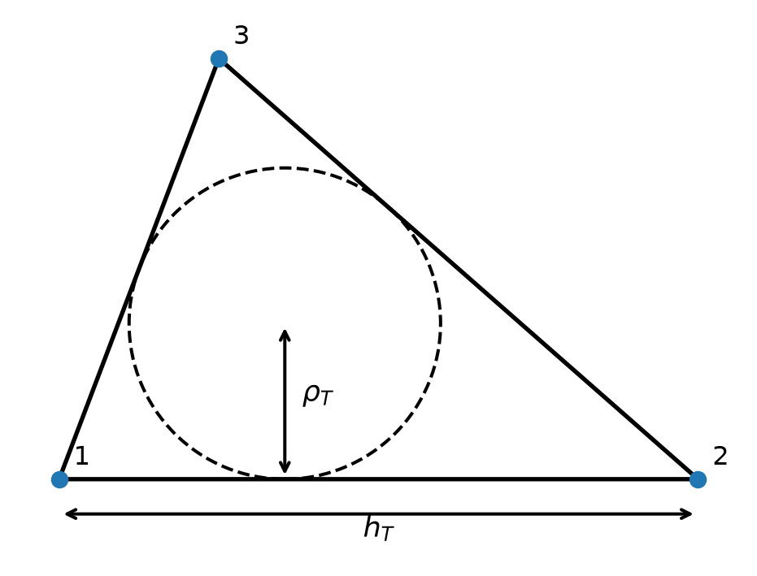
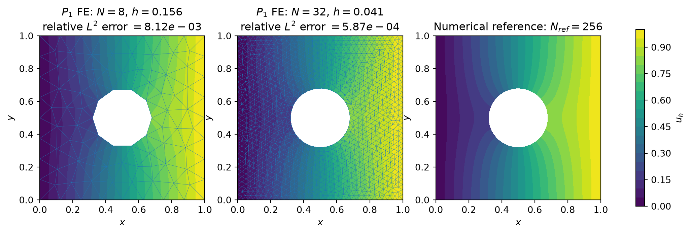
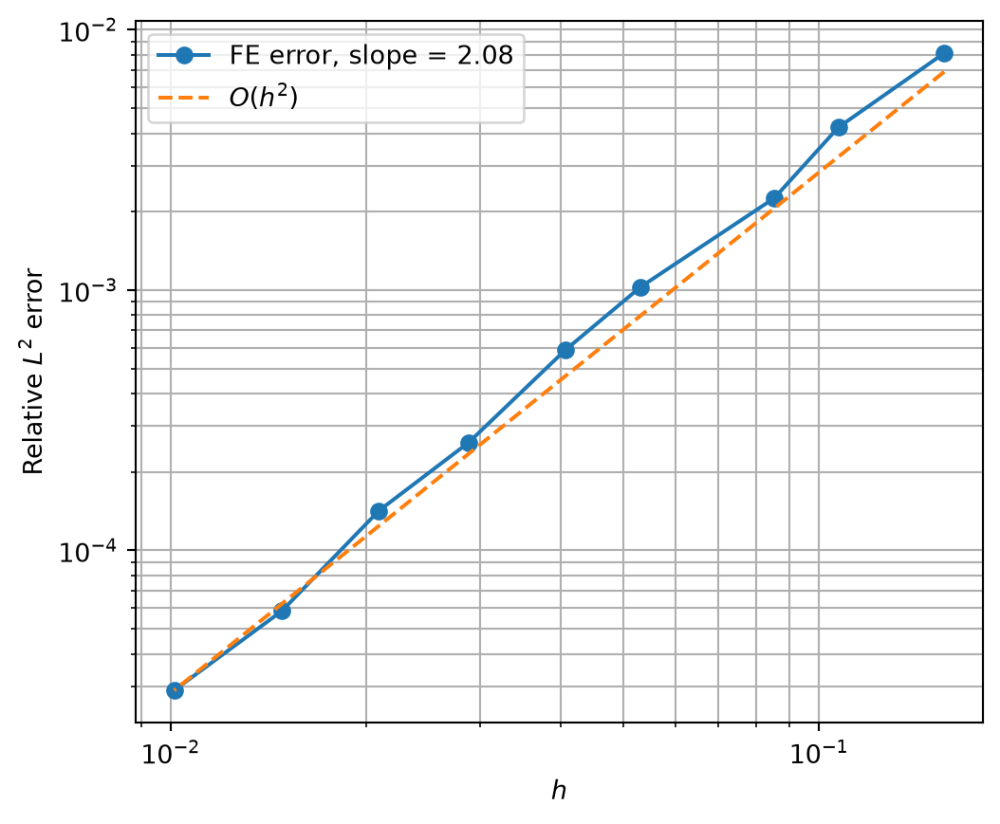
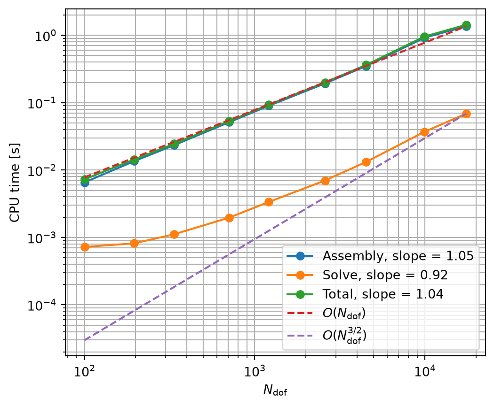

Session 3 — Accuracy, convergence, and computational cost of the Finite Element Method
Learning objectives
By the end of this session, students should be able to:
- distinguish interpolation error from finite-element error;
- relate finite-element accuracy to polynomial degree, mesh size, and solution regularity;
- state the expected convergence rates for \(P_1\) and \(P_2\) elements;
- explain the role of mesh quality in approximation and conditioning;
- relate mesh refinement to the number of degrees of freedom;
- understand the main computational consequences of sparsity and conditioning.
Session schedule
| Time | Topic |
|---|---|
| 0–10 min | From Galerkin optimality to convergence |
| 10–30 min | Interpolation error in 1D |
| 30–45 min | Extension to 2D and higher-order elements |
| 45–60 min | Finite-element error and solution regularity |
| 60–70 min | Mesh quality and shape regularity |
| 70–80 min | Convergence, degrees of freedom, and conditioning |
| 80–90 min | Linear solvers and computational cost |
1 From Galerkin optimality to convergence
For simplicity, the convergence discussion is written for homogeneous Dirichlet conditions. The same reasoning applies to non-homogeneous Dirichlet conditions after boundary lifting.
Recall from Session 1 that, for the Poisson problem,
\[ \|v\|_a = |v|_{H^1(\Omega)}, \]
and the Galerkin solution is the best approximation in the finite-element space:
\[ \boxed{ \|u-u_h\|_a = \min_{v_h\in V_{h,0}} \|u-v_h\|_a. } \]
The convergence question therefore becomes:
How well can the finite-element space approximate the exact solution when the mesh is refined?
2 Mesh refinement
Recall from Session 2 that
\[ h_T = \operatorname{diam}(T) = \max_{\mathbf x,\mathbf y\in T} |\mathbf x-\mathbf y|, \qquad h = \max_{T\in\mathcal T_h} h_T. \]
Mesh refinement corresponds to
\[ \boxed{h\rightarrow 0.} \]
3 Nodal interpolation
Let \(I_hu\) denote the nodal finite-element interpolant of \(u\).
At every mesh node \(\mathbf x_i\),
\[ \boxed{ I_hu(\mathbf x_i) = u(\mathbf x_i). } \]
Using the global basis functions,
\[ I_hu = \sum_i u(\mathbf x_i)\phi_i. \]
The interpolant is not the finite-element solution of the PDE. It is one particular function in the approximation space, used to measure how accurately that space is able to represent \(u\).
4 Interpolation error in one dimension
4.1 Linear elements: \(P_1\)
Consider a one-dimensional element
\[ T=[x_1,x_2], \qquad h_T=x_2-x_1. \]
Let \(I_hu\) denote the \(P_1\) interpolant of \(u\), defined by
\[ I_hu(x_1)=u(x_1), \qquad I_hu(x_2)=u(x_2). \]
Recall that the \(L^\infty\) norm measures the maximum absolute value of a function over the element:
\[ \boxed{ \|v\|_{L^\infty(T)} = \max_{x\in T}|v(x)|. } \]
Thus,
\[ \|u-I_hu\|_{L^\infty(T)} \]
is the largest interpolation error anywhere in the element.
4.1.1 Error on the function
Choose any point \(x\in T\). Taylor expansions of the nodal values about \(x\) give
\[ u(x_1) = u(x) + u'(x)(x_1-x) + r_1, \]
and
\[ u(x_2) = u(x) + u'(x)(x_2-x) + r_2, \]
with
\[ |r_1| \le \frac{1}{2}|x_1-x|^2 \|u''\|_{L^\infty(T)}, \]
and
\[ |r_2| \le \frac{1}{2}|x_2-x|^2 \|u''\|_{L^\infty(T)}. \]
The \(P_1\) interpolant can be written as
\[ I_hu(x) = \frac{x_2-x}{h_T}u(x_1) + \frac{x-x_1}{h_T}u(x_2). \]
Substituting the Taylor expansions, the constant term gives \(u(x)\) and the linear terms cancel exactly. Therefore,
\[ I_hu(x)-u(x) = \frac{x_2-x}{h_T}r_1 + \frac{x-x_1}{h_T}r_2. \]
Using the bounds on the Taylor remainders gives
\[ |I_hu(x)-u(x)| \le \frac{1}{2} (x-x_1)(x_2-x) \|u''\|_{L^\infty(T)}. \]
Since
\[ (x-x_1)(x_2-x) \le \frac{h_T^2}{4}, \]
we obtain
\[ \boxed{ \|u-I_hu\|_{L^\infty(T)} \le \frac{h_T^2}{8} \|u''\|_{L^\infty(T)}. } \]
Hence,
\[ \boxed{ u-I_hu=O(h_T^2). } \]
4.1.2 Error on the derivative
The \(P_1\) interpolant is linear on the element, so its derivative is constant:
\[ (I_hu)' = \frac{u(x_2)-u(x_1)}{h_T}. \]
Using the same Taylor expansions,
\[ u(x_2)-u(x_1) = h_Tu'(x) + r_2-r_1, \]
and therefore
\[ (I_hu)' = u'(x) + \frac{r_2-r_1}{h_T}. \]
Hence,
\[ |(u-I_hu)'(x)| \le \frac{|r_1|+|r_2|}{h_T}. \]
Since
\[ |x-x_1|+|x_2-x|=h_T, \]
we have
\[ |x-x_1|^2+|x_2-x|^2 \le h_T^2. \]
Therefore,
\[ \boxed{ \|(u-I_hu)'\|_{L^\infty(T)} \le \frac{h_T}{2} \|u''\|_{L^\infty(T)}. } \]
Hence,
\[ \boxed{ (u-I_hu)'=O(h_T). } \]
The loss of one order has a simple interpretation: differentiating removes one power of the element size,
\[ \boxed{ O(h_T^2) \quad\xrightarrow{\text{one derivative}}\quad O(h_T). } \]
Thus, for \(P_1\) interpolation,
\[ \boxed{ u-I_hu=O(h_T^2), \qquad (u-I_hu)'=O(h_T). } \]
The first Taylor term that cannot be reproduced by a \(P_1\) approximation is the quadratic term, which is controlled by the second derivative \(u''\).
4.2 Quadratic elements: \(P_2\)
A quadratic element reproduces exactly all polynomials of degree at most two.
The first Taylor term which is not represented is therefore of degree three.
Without proof,
\[ \boxed{ \|u-I_hu\|_{L^\infty(T)} \le C h_T^3 \|u^{(3)}\|_{L^\infty(T)}, } \]
and
\[ \boxed{ \|(u-I_hu)'\|_{L^\infty(T)} \le C h_T^2 \|u^{(3)}\|_{L^\infty(T)}. } \]
Thus,
\[ \boxed{ P_2: \qquad u-I_hu=O(h_T^3), \qquad (u-I_hu)'=O(h_T^2). } \]
5 Extension to two dimensions

The same principle extends to a triangular element \(T\).
There is, however, one additional ingredient in two dimensions: the shape of the element. Unlike in one dimension, two elements with the same size \(h_T\) may have very different shapes.
The constant \(C\) appearing below is independent of \(h_T\), but may depend on the shape of the element. For a shape-regular family of meshes, for which
\[ \frac{h_T}{\rho_T} \le C_{\mathrm{shape}}, \]
with \(\rho_T\) the inradius of the triangle, the constant \(C\) remains uniformly bounded as the mesh is refined.
For \(P_1\) elements, affine functions are reproduced exactly. The first non-represented Taylor term therefore involves the Hessian
\[ D^2u. \]
Without proof,
\[ \boxed{ \|u-I_hu\|_{L^\infty(T)} \le C h_T^2 \|D^2u\|_{L^\infty(T)}, } \]
and
\[ \boxed{ \|\nabla(u-I_hu)\|_{L^\infty(T)} \le C h_T \|D^2u\|_{L^\infty(T)}. } \]
For quadratic \(P_2\) elements,
\[ \boxed{ \|u-I_hu\|_{L^\infty(T)} \le C h_T^3 \|D^3u\|_{L^\infty(T)}, } \]
and
\[ \boxed{ \|\nabla(u-I_hu)\|_{L^\infty(T)} \le C h_T^2 \|D^3u\|_{L^\infty(T)}. } \]
The general pattern is
\[ \boxed{ P_p \quad\Longrightarrow\quad \text{first non-represented Taylor term has order }p+1. } \]
6 Interpolation error versus finite-element error
Two different errors must now be distinguished.
The interpolation error
\[ \boxed{ e_I=u-I_hu } \]
measures the approximation capability of the finite-element space.
The finite-element error
\[ \boxed{ e_h=u-u_h } \]
measures the error of the solution obtained by solving the discretized PDE.
In general,
\[ I_hu\neq u_h. \]
The interpolation estimates derived previously were expressed in the \(L^\infty\) norm. For example, for \(P_1\) elements,
\[ \|\nabla(u-I_hu)\|_{L^\infty(\Omega)} \le Ch\,\|D^2u\|_{L^\infty(\Omega)}. \]
This estimate could already be used to control the error in an integral norm. Indeed,
\[ |u-I_hu|_{H^1(\Omega)} = \left( \int_\Omega |\nabla(u-I_hu)|^2\,d\Omega \right)^{1/2}, \]
so that
\[ |u-I_hu|_{H^1(\Omega)} \le |\Omega|^{1/2} \|\nabla(u-I_hu)\|_{L^\infty(\Omega)}. \]
Hence,
\[ |u-I_hu|_{H^1(\Omega)} \le C h \|D^2u\|_{L^\infty(\Omega)}. \]
This is a valid estimate, but it requires the second derivatives of \(u\) to be bounded everywhere.
A less restrictive and more natural result for finite-element analysis is obtained directly in Sobolev norms. For \(P_1\) elements, the standard interpolation estimate is
\[ \boxed{ |u-I_hu|_{H^1(\Omega)} \le C h |u|_{H^2(\Omega)}. } \]
Here,
\[ |u|_{H^2(\Omega)} = \left( \int_\Omega |D^2u|^2\,d\Omega \right)^{1/2}, \]
so only square integrability of the second derivatives is required.
Similarly, for \(P_2\) elements,
\[ \boxed{ |u-I_hu|_{H^1(\Omega)} \le C h^2 |u|_{H^3(\Omega)}. } \]
These are the Sobolev-norm counterparts of the interpolation estimates introduced previously.
For the Poisson problem, the energy norm is
\[ \|v\|_a^2 = a(v,v) = \int_\Omega |\nabla v|^2\,d\Omega, \]
and therefore
\[ \boxed{ \|v\|_a = |v|_{H^1(\Omega)}. } \]
Galerkin optimality gives
\[ \|u-u_h\|_a \le \|u-I_hu\|_a, \]
and hence
\[ \boxed{ |u-u_h|_{H^1(\Omega)} \le |u-I_hu|_{H^1(\Omega)}. } \]
We can now combine Galerkin optimality with the interpolation estimates.
For linear \(P_1\) elements,
\[ |u-u_h|_{H^1(\Omega)} \le |u-I_hu|_{H^1(\Omega)} \le C h |u|_{H^2(\Omega)}, \]
and therefore
\[ \boxed{ |u-u_h|_{H^1} = O(h). } \]
For quadratic \(P_2\) elements,
\[ |u-u_h|_{H^1(\Omega)} \le |u-I_hu|_{H^1(\Omega)} \le C h^2 |u|_{H^3(\Omega)}, \]
and therefore
\[ \boxed{ |u-u_h|_{H^1} = O(h^2). } \]
The convergence mechanism is therefore
\[ \boxed{ \text{interpolation properties} \;+\; \text{Galerkin optimality} \;\Longrightarrow\; \text{finite-element convergence}. } \]
Recall: variable diffusion coefficient
Recall from Session 1 that for
\[ -\nabla\cdot(k(\mathbf x)\nabla u)=f, \]
with
\[ 0<k_{\min}\le k(\mathbf x)\le k_{\max}, \]
the energy norm is
\[ \|v\|_a^2 = \int_\Omega k(\mathbf x)|\nabla v|^2\,d\Omega, \]
and satisfies
\[ \sqrt{k_{\min}}\,|v|_{H^1} \le \|v\|_a \le \sqrt{k_{\max}}\,|v|_{H^1}. \]
Galerkin optimality therefore gives
\[ |u-u_h|_{H^1} \le \sqrt{\frac{k_{\max}}{k_{\min}}} \,|u-I_hu|_{H^1}. \]
For \(P_1\) elements,
\[ |u-I_hu|_{H^1(\Omega)} \le C_{\mathrm{int}}\,h\,|u|_{H^2(\Omega)}, \]
so
\[ \boxed{ |u-u_h|_{H^1(\Omega)} \le C_{\mathrm{int}} \sqrt{\frac{k_{\max}}{k_{\min}}} \,h\,|u|_{H^2(\Omega)}. } \]
Thus, in the usual notation
\[ |u-u_h|_{H^1(\Omega)} \le C\,h\,|u|_{H^2(\Omega)}, \]
the constant \(C\) now depends not only on the interpolation properties of the mesh, but also on the diffusion contrast \(k_{\max}/k_{\min}\).
6.1 Error in the solution itself: the \(L^2\) norm
The energy estimate controls the error in the gradient:
\[ |u-u_h|_{H^1(\Omega)}. \]
A sharper estimate can also be obtained for the error in the solution itself, measured in the \(L^2\) norm.
For sufficiently regular elliptic problems,
\[ \boxed{ P_1: \qquad \|u-u_h\|_{L^2(\Omega)} \le C h^2 |u|_{H^2(\Omega)}, } \]
and
\[ \boxed{ P_2: \qquad \|u-u_h\|_{L^2(\Omega)} \le C h^3 |u|_{H^3(\Omega)}. } \]
Thus,
\[ \boxed{ \begin{array}{c|cc} & H^1\text{ error} & L^2\text{ error} \\ \hline P_1 & O(h) & O(h^2) \\ P_2 & O(h^2) & O(h^3) \end{array} } \]
The \(L^2\) error therefore converges one order faster than the \(H^1\) error.
This improved estimate is obtained through a duality argument (Aubin–Nitsche), which is not developed here.
7 Interpreting a convergence rate
Suppose that
\[ e(h) \approx C h^p. \]
Taking logarithms,
\[ \log e = \log C + p\log h. \]
Therefore, on a log-log plot of error versus mesh size, the convergence rate \(p\) is the slope:
\[ \boxed{ p = \frac{ \log(e_2/e_1) }{ \log(h_2/h_1) }. } \]
For example, if
\[ h_2=\frac{h_1}{2}, \]
then an \(O(h)\) error is approximately divided by two, whereas an \(O(h^2)\) error is approximately divided by four.
8 Solution regularity and convergence rate
The convergence rates obtained above assume that the exact solution has sufficient regularity.
For \(P_1\) elements, the estimate
\[ |u-u_h|_{H^1} \le C h |u|_{H^2} \]
requires
\[ u\in H^2(\Omega). \]
For \(P_2\) elements, the optimal estimate
\[ |u-u_h|_{H^1} \le C h^2 |u|_{H^3} \]
requires
\[ u\in H^3(\Omega). \]
The polynomial degree alone therefore does not determine the convergence rate: the exact solution must also possess the corresponding regularity.
For example, if the solution is less regular and only satisfies
\[ u\in H^{1+s}(\Omega), \qquad 0<s<1, \]
then a \(P_1\) approximation generally gives only
\[ \boxed{ |u-u_h|_{H^1} = O(h^s), } \]
rather than \(O(h)\).
Typical causes of reduced regularity include:
- re-entrant corners;
- geometric singularities;
- discontinuous coefficients;
- singular or strongly localized loading.
Thus,
\[ \boxed{ \text{high polynomial order alone does not guarantee a high convergence rate}. } \]
9 Mesh quality and shape regularity
As seen in the two-dimensional interpolation estimates, mesh refinement must preserve element shape as well as reduce the element size.
Shape regularity ensures that the constants appearing in the interpolation estimates remain uniformly bounded as \(h\rightarrow 0\).
This has an important practical consequence: reducing the diameter of an element does not necessarily improve the approximation if the element becomes increasingly distorted at the same time.
Mesh quality also affects the algebraic problem.
For \(P_1\) triangles, the gradients of the local shape functions are constant inside each element. As an element becomes increasingly flat or degenerate, these gradients can become very large.
Since the elemental stiffness matrix contains terms of the form
\[ K^{(T)}_{ab} = \int_T \nabla N_a\cdot\nabla N_b\,d\Omega, \]
strong element distortion can therefore deteriorate the conditioning of the global stiffness matrix.
Thus, mesh quality affects both
\[ \boxed{ \begin{array}{c} \text{approximation accuracy}\\ \text{and}\\ \text{algebraic conditioning}. \end{array} } \]
10 Convergence and number of unknowns
For a quasi-uniform mesh in spatial dimension \(d\), the number of degrees of freedom for fixed-order finite elements scales approximately as
\[ \boxed{ N_{\mathrm{dof}} \sim h^{-d}. } \]
Equivalently,
\[ \boxed{ h \sim N_{\mathrm{dof}}^{-1/d}. } \]
Thus,
| Spatial dimension | Degrees of freedom | Mesh size |
|---|---|---|
| 1D | \(N_{\mathrm{dof}}\sim h^{-1}\) | \(h\sim N_{\mathrm{dof}}^{-1}\) |
| 2D | \(N_{\mathrm{dof}}\sim h^{-2}\) | \(h\sim N_{\mathrm{dof}}^{-1/2}\) |
| 3D | \(N_{\mathrm{dof}}\sim h^{-3}\) | \(h\sim N_{\mathrm{dof}}^{-1/3}\) |
Reducing the mesh size by a factor of two therefore multiplies the number of degrees of freedom approximately by
\[ \boxed{ 2^d. } \]
That is, by a factor of \(2\) in 1D, \(4\) in 2D, and \(8\) in 3D.
This relation allows convergence rates expressed in terms of \(h\) to be translated into convergence rates in terms of the size of the algebraic problem.
For \(P_1\) elements,
\[ |u-u_h|_{H^1} = O(h), \]
and therefore
\[ \boxed{ |u-u_h|_{H^1} = O\left( N_{\mathrm{dof}}^{-1/d} \right). } \]
For sufficiently regular problems,
\[ \|u-u_h\|_{L^2} = O(h^2), \]
so
\[ \boxed{ \|u-u_h\|_{L^2} = O\left( N_{\mathrm{dof}}^{-2/d} \right). } \]
More generally, for \(P_p\) elements and sufficiently regular solutions,
\[ \boxed{ |u-u_h|_{H^1} = O\left( N_{\mathrm{dof}}^{-p/d} \right), } \]
and
\[ \boxed{ \|u-u_h\|_{L^2} = O\left( N_{\mathrm{dof}}^{-(p+1)/d} \right). } \]
The same convergence rate with respect to \(h\) therefore requires increasingly many degrees of freedom as the spatial dimension increases.
10.1 Conditioning of the stiffness matrix
For the Poisson problem, after application of Dirichlet boundary conditions,
\[ KU=F \]
has a symmetric positive-definite stiffness matrix \(K\).
Its spectral condition number is
\[ \boxed{ \kappa_2(K) = \frac{\lambda_{\max}(K)} {\lambda_{\min}(K)}. } \]
The condition number measures how sensitive the algebraic system is to perturbations and numerical errors. It also plays an important role in the convergence of iterative solvers.
For fixed-order finite elements on a quasi-uniform, shape-regular family of meshes, the standard scaling for the Poisson stiffness matrix is
\[ \boxed{ \kappa_2(K) = O(h^{-2}). } \]
This scaling is essentially independent of the spatial dimension. Therefore,
\[ h\downarrow \qquad\Longrightarrow\qquad \kappa_2(K)\uparrow. \]
Using the relation established above,
\[ N_{\mathrm{dof}} \sim h^{-d}, \]
we have
\[ h^{-2} \sim N_{\mathrm{dof}}^{2/d}, \]
and therefore
\[ \boxed{ \kappa_2(K) = O\left( N_{\mathrm{dof}}^{2/d} \right). } \]
In particular,
\[ \boxed{ \kappa_2(K) \sim \begin{cases} O(N_{\mathrm{dof}}^2), & d=1,\\[1mm] O(N_{\mathrm{dof}}), & d=2,\\[1mm] O(N_{\mathrm{dof}}^{2/3}), & d=3. \end{cases} } \]
Thus, mesh refinement improves the approximation but simultaneously makes the unpreconditioned algebraic system increasingly ill-conditioned.
The \(h^{-2}\) scaling assumes a quasi-uniform, shape-regular mesh family. Strongly distorted or highly graded meshes may lead to significantly worse conditioning.
11 Linear algebra and computational cost
11.1 Assemnly cost
The finite-element discretization produces a sparse linear system
\[ KU=F. \]
For fixed-order finite elements on a shape-regular mesh, each degree of freedom interacts only with a limited number of neighboring degrees of freedom.
The number of non-zero entries in the stiffness matrix therefore scales as
\[ \boxed{ \operatorname{nnz}(K) = O(N_{\mathrm{dof}}). } \]
Since each element contributes a fixed-size elemental matrix, the assembly cost also scales approximately as
\[ \boxed{ T_{\mathrm{assembly}} = O(N_{\mathrm{dof}}). } \]
These estimates hold in any spatial dimension for fixed polynomial order.
11.2 Dense versus sparse direct solvers
If the stiffness matrix were treated as a dense matrix, a direct factorization would require approximately
\[ O(N_{\mathrm{dof}}^3) \]
operations and
\[ O(N_{\mathrm{dof}}^2) \]
memory.
This would completely ignore the sparse structure generated by the finite-element method.
Before factorization, a fixed-order finite-element stiffness matrix contains only
\[ \operatorname{nnz}(K)=O(N_{\mathrm{dof}}) \]
non-zero entries.
Sparse direct solvers exploit this structure. During factorization, however, additional non-zero entries are created. This phenomenon is called fill-in.
With an appropriate ordering of the degrees of freedom (nested dissection), the classical complexity estimates for elliptic problems on regular meshes are approximately
| Spatial dimension | Factorization cost | Memory |
|---|---|---|
| 1D | \(O(N_{\mathrm{dof}})\) | \(O(N_{\mathrm{dof}})\) |
| 2D | \(O(N_{\mathrm{dof}}^{3/2})\) | \(O(N_{\mathrm{dof}}\log N_{\mathrm{dof}})\) |
| 3D | \(O(N_{\mathrm{dof}}^2)\) | \(O(N_{\mathrm{dof}}^{4/3})\) |
Thus, although the original finite-element matrix contains only \(O(N_{\mathrm{dof}})\) non-zero entries, its factors may require substantially more storage because of fill-in.
The difference between two and three dimensions can be understood from the geometry of sparse elimination.
A suitable ordering eliminates interior degrees of freedom first, as part of the factorization of the complete matrix. The remaining degrees of freedom lie on an interface, called a separator. The same idea is applied recursively inside the subdomains.
In 2D, the separator is approximately a line. Since
\[ N_{\mathrm{dof}}\sim h^{-2}, \]
it contains approximately
\[ O(h^{-1}) = O(N_{\mathrm{dof}}^{1/2}) \]
degrees of freedom.
Eliminating the interior creates additional couplings between the separator unknowns, so that the corresponding block becomes essentially dense. Its factorization costs approximately
\[ O\left((N_{\mathrm{dof}}^{1/2})^3\right) = \boxed{O(N_{\mathrm{dof}}^{3/2})}. \]
In 3D, the separator is approximately a surface. Since
\[ N_{\mathrm{dof}}\sim h^{-3}, \]
it contains approximately
\[ O(h^{-2}) = O(N_{\mathrm{dof}}^{2/3}) \]
degrees of freedom. The corresponding factorization cost is therefore
\[ O\left((N_{\mathrm{dof}}^{2/3})^3\right) = \boxed{O(N_{\mathrm{dof}}^2)}. \]
The recursive elimination of the subdomains does not change these leading-order estimates.
The much faster increase in both computational cost and memory consumption in 3D is one of the main limitations of sparse direct solvers for large finite-element problems.
12 Accuracy and computational cost
Mesh refinement has several simultaneous consequences:
\[ \boxed{ h\downarrow \quad\Longrightarrow\quad \begin{cases} \text{smaller discretization error},\\ \text{larger }N_{\mathrm{dof}},\\ \text{larger condition number},\\ \text{larger computational cost}. \end{cases} } \]
The finite-element method therefore involves a compromise between approximation accuracy and computational cost.
The polynomial order, spatial dimension, solution regularity, mesh quality, and linear solver all contribute to this compromise.
13 Convergence study
We return to the Poisson problem on the square with a circular hole introduced in Session 2 and study how the \(P_1\) finite-element solution changes under mesh refinement.
A very fine \(P_1\) solution is first computed and used as a numerical reference solution. This reference is not exact; it is simply much more resolved than the solutions used in the refinement study.
The problem is then solved on a sequence of increasingly fine meshes. For each mesh, we measure
- the mesh size \(h\);
- the relative \(L^2\) error with respect to the numerical reference;
- the assembly and sparse-solve times.
Two representative finite-element solutions are shown together with the reference solution before examining the convergence rate and computational cost.
Computing numerical reference solution (N_ref=256)...
L2 convergence rate = 2.08
Assembly scaling = N_dof^1.05
Solve scaling = N_dof^0.92
Total scaling = N_dof^1.04
N h nodes elements rel. L2 error assembly [s] solve [s] total [s]
--------------------------------------------------------------------------------------
8 0.1560 100 158 8.124e-03 6.561e-03 7.237e-04 7.284e-03
12 0.1072 196 330 4.217e-03 1.356e-02 8.169e-04 1.438e-02
16 0.0853 336 589 2.256e-03 2.339e-02 1.114e-03 2.451e-02
24 0.0531 706 1288 1.028e-03 5.125e-02 1.964e-03 5.321e-02
32 0.0406 1207 2249 5.873e-04 8.980e-02 3.355e-03 9.315e-02
48 0.0288 2584 4921 2.594e-04 1.929e-01 7.003e-03 2.000e-01
64 0.0210 4510 8691 1.422e-04 3.498e-01 1.321e-02 3.631e-01
96 0.0148 9942 19391 5.857e-05 9.230e-01 3.705e-02 9.600e-01
128 0.0101 17483 34309 2.902e-05 1.364e+00 6.901e-02 1.433e+00The two coarse solutions illustrate how the finite-element field approaches the fine numerical reference as the mesh is refined. The log-log error plot then tests the expected \(P_1\) rate
\[ \|u-u_h\|_{L^2(\Omega)}=O(h^2), \]
while the timing plot connects mesh refinement to the computational cost of assembly and of the sparse direct solve.
14 Summary
For \(P_1\) elements,
\[ \boxed{ \|u-I_hu\|_{L^\infty} = O(h^2), \qquad \|\nabla(u-I_hu)\|_{L^\infty} = O(h), } \]
and, for sufficiently regular solutions,
\[ \boxed{ |u-u_h|_{H^1} = O(h), \qquad \|u-u_h\|_{L^2} = O(h^2). } \]
For \(P_2\) elements,
\[ \boxed{ \|u-I_hu\|_{L^\infty} = O(h^3), \qquad \|\nabla(u-I_hu)\|_{L^\infty} = O(h^2), } \]
and, for sufficiently regular solutions,
\[ \boxed{ |u-u_h|_{H^1} = O(h^2), \qquad \|u-u_h\|_{L^2} = O(h^3). } \]
The complete chain is
\[ \boxed{ \text{polynomial approximation} \rightarrow \text{interpolation error} \rightarrow \text{Galerkin optimality} \rightarrow \text{FEM error}. } \]
The theoretical rates additionally require
\[ \boxed{ \text{sufficient solution regularity} + \text{a shape-regular mesh family}. } \]
Finally, in two dimensions,
\[ N_{\mathrm{dof}} \sim h^{-2}, \qquad \kappa_2(K) \sim h^{-2}, \]
which links mesh refinement, accuracy, conditioning, and computational cost.